מבוא
בשיעור זה נלמד את החלק הראשון בסכמה -
שלבים:
שלבים:
בשלבים אלו, המטפל יבצע הערכה מהירה וטיפול מיידי ברמה בסיסית
במצבים מסכני חיים בלבד.
במצבים מסכני חיים בלבד.
גישה לפצוע
גישה לפצוע
מעבר לכתוב בסכמה, על החובש להבין שהוא מטפל באדם ועל כן עליו לגלות אמפתיה וסמכותיות.
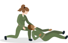
יש לשאול לשם הפצוע.
לדובב את הפצוע -
יכול לעזור לנו להבין מה קרה.
דיבור בצורה סמכותית ורגועה.
יש לעדכן את הפצוע בכל פעולה שאנו עושים.
לדאוג לנוחיות הפצוע.
נדאג לנוחיות הפצוע ע"י השכבה/הושבה. (הפצוע לא תמיד חייב לשכב - ניתן לפנות בישיבה)
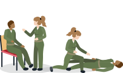
שלב ה-X
בשלב ה-X נדאג לביטחון המטפל והמטופל,
נתרשם מהזירה וממנגנון הפציעה,
נעצור דימומים פורצים באופן מיידי
ונעביר דיווח ראשוני.
נתרשם מהזירה וממנגנון הפציעה,
נעצור דימומים פורצים באופן מיידי
ונעביר דיווח ראשוני.
שימו לב -
לפני נתחיל את הסקר הראשוני נעשה טיפול תחת אש במידת בצורך (נלמד עליו בשיעור אחר).
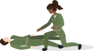
טיפול תחת אש
ביטחון המטופל והמטפל
בשלב הזה עלינו לבצע תרגולות
'חלץ טפל' ו'פצוע בכוח'
לאחר שהגענו לזירה מאובטחת נוכל להתחיל בסקר הראשוני
'חלץ טפל' ו'פצוע בכוח'
לאחר שהגענו לזירה מאובטחת נוכל להתחיל בסקר הראשוני
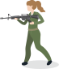
הגעה לסביבה מאובטחת/בטוחה
הגעה לסביבה מאובטחת/בטוחה
כפפות = עוד לפני ההגעה לזירה!
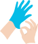
טיפול במקום מאובטח = העברת הפצוע והצוות לאזור בטוח.
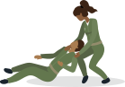
מיגון = מיגון קרמי ועיני.
נצירת הנשק = ובמידה והפצוע לא יכול להלחם, גם נוריד ממנו את הנשק.
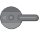
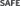
חשוב -
הסתערות על פצוע ללא דאגה לבטחון החובש עלולה להוביל להיווצרות פצועים נוספים.
במידה והפצוע בהכרה ויכול לתפקד, יש להנחותו להשיב באש, לנסות להגיע למחסה או אל שאר הכוח, ולטפל בעצמו - במידה
והוא מסוגל.
התרשמות מזירת האירוע
וממנגנון הפציעה
וממנגנון הפציעה
התרשמות מזירת האירוע
וממנגנון הפציעה
סיפור המקרה
= מה בדיוק קרה, כמה פצועים וכדומה. ניתן לברר פרטים אלו ע”י קבלת דיווח.
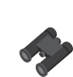
מנגנון הפציעה = התרשמות מהקינמטיקה ומהפציעות
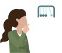
בחינה ויזאלית = מעבר לקבלת מידע מהדיווח הראשוני ומהנוכחים, נרצה לבחון
ויזואלית את זירת האירוע.
חשוב -
ההתרשמות הראשונית מתבצעת תוך כדי הטיפול והיא איננה שלב בפני עצמה.
דיווח אגמ"י
דיווח אג”מי
לאחר עצירת הדימומים הפורצים יש להעלות דיווח ראשוני על מנת להבטיח הגעה של סיוע אג”מי ורפואי, הכולל פינוי במידת
הצורך.
הדיווח בשלב זה צריך להיות קצר וממוקד
ולהכיל את 5 הממ”ים:
1
מי מדווח - תפקיד ושם המדווח(אות ראשונה של
השם)
2
מקום - איפה אתם נמצאים
3
מתאר - מאוימים/לא מאוימים. מה
קרה
4
מספר פצועים + דחיפות פינוי -
חיילים/אזרחים/מחבלים
פצוע דחוף
יפונה כמה שיותר מהר!
פצוע עם סכנה
לחיים או לאיבר
לחיים או לאיבר
5
מה אני צריך -
מה הציוד הנדרש לטיפול
שלב ה - C
שלב זה מחולק
להערכה ולטיפול.
תחילה נלמד כיצד להעריך את נתיב האוויר של הפצוע, ולאחר מכן כיצד לסלק הפרשות ולפתוח נ”א במידת הצורך.
תחילה נלמד כיצד להעריך את נתיב האוויר של הפצוע, ולאחר מכן כיצד לסלק הפרשות ולפתוח נ”א במידת הצורך.
חלק ראשון -
עצירת דימום פורץ
עצירת דימום פורץ
חלק ראשון -
עצירת דימום פורץ
במקרה וקיים דימום פורץ שלא נעצר בשלבים הקודמים - נעצור דימומים פורצים בלבד!
נוודא שדימומים שעצרנו בשלבים קודמים נעצרו
נתחיל בהפשטה מלאה
חיפוש אחר פציעות ומקורות דימום
חלק ראשון -
חיפוש אחר פציעות ומקורות דימום
1
נתחיל מהגפיים התחתונות
2
נסרוק מראש הגפה (בית שחי, מפשעה)
3
נסרוק כל גפה ב360°
4
נעביר ידיים מתחת לגוף
5
לשים לב לבצע סריקה יסודית!
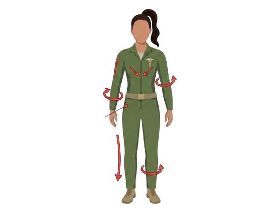
נסרוק גם איזורים נסתרים: ראש, חזה, צוואר (ועורף), גב, עכוז, בתי שחי ומפשעות
בשלב זה נעצור דימום פורץ בלבד במידה ונמצא
כעת נעשה לפצוע
הערכה קלינית
הערכה קלינית מתרכזת בבדיקת מצב ההלם בפצוע.
הערכה קלינית מתרכזת בבדיקת מצב ההלם בפצוע.
חלק שני -
בדיקת הכרה
בדיקת הכרה
חלק שני -
בדיקת הכרה
על מנת לקבוע את המשך הטיפול בפצוע (ואם קיימת בעיה בנתיב האוויר) נבצע בדיקת הכרה ע”פ שלבי ה- A.V.P.U
Alert - הכרה מלאה
Vocal - מגיב לקול
קריאה בשם המטופל/אדוני אדוני...
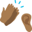
Pain - מגיב לכאב
צביטה בשרירי הטרפזים.
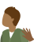
Unresponsive - חסר הכרה

חלק שלישי -
פתיחת נתיב אוויר
פתיחת נתיב אוויר
חלק שלישי -
פתיחת נתיב אוויר
במידה והפצוע מחוסר הכרה נרצה להתרשם ממצב הנשימה של הפצוע
נבצע הערכה ראשונית - האם הפצוע נושם או לא?
הסכנה העיקרית לפצוע חסר הכרה הינה צניחת בסיס הלשון!
לפצוע מחוסר הכרה, יש לפתוח נתיב אוויר על מנת למנוע מצב זה.
הלשון מחוברת ללסת, ולכן צריך להרים את הלסת, ולהרחיק את הלשון מן הקנה.
ישנן 2 אפשרויות לפתיחת נתיב אוויר:
AirWay
ה-A.W יוחדר לפצוע שאינו מגיב לכאב בלבד.
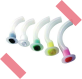
1
מנתב את האוויר לקנה הנשימה
2
תומך חלקית בחלק העליון של הלשון ומרחיק אותה מהחך.
3
יכול למנוע סגירה של השיניים כאשר יש נעילת לסת
גודל הAW
בדיקת גודל הAW תעשה ע"י הצמדת חלקו החיצוני לאוזן של הפצוע, כאשר החלק שנכנס ללוע צריך להגיע לזווית הפה.
יש להקפיד על גודל A.W מתאים. A.W גדול עלול לגרום לאספירציה ואילו קטן אינו מצמצם צב"ל.
יתרונות:
מפחית את הסיכוי לחנק מהלשון.
משפר את איכות ההנשמה.
דגשים:
A.W שנפלט (שלא כתוצאה מהפרשות) לא יוחזר בשל קיום רפלקסים.
A.W יוחדר לפצוע בלי לדחוף את הלשון.
A.W לא שומר על נתיב האוויר פתוח.
Jaw Thrust -
דחיקת לסת
איך JT עובד?
הלשון מחוברת ללסת התחתונה
הרמת הלסת התחתונה
הלשון מתרוממת
נתיב האוויר נפתח
יבוצע לפצוע מחוסר הכרה בלבד!
אין לעזוב את ההחזקה בשום שלב!
יבוצע רק אצל פצוע עם חשד לפגיעת עמש”צ.
מאפשר דחיקה של הלסת תוך שמירה על עמוד השדרה הצווארי.
כאשר החובש מטפל יחד עם מח"צים(מצילי חיים) - יש לבצע JT ע"י חובש רק לאחר שלוש הפעולות הבאות:
עצירת דימומים פורצים, דיווח והכנה לפינוי.
עצירת דימומים פורצים, דיווח והכנה לפינוי.
המטרה בדחיקת הלסת היא הרמת הלשון, ולא פתיחת הפה.
את שלב זה נבצע רק אצל פצועים שאינם מגיבים לכאב.
את שלב זה נבצע רק אצל פצועים שאינם מגיבים לכאב.
חלק רביעי -
סילוק הפרשות
סילוק הפרשות
חלק רביעי -
סילוק הפרשות
בשלב זה נעריך את מצב נתיב האוויר של הפצוע.
נפתח את פה הפצוע
נפתח את פה הפצוע כדי לבדוק האם לפצוע יש הפרשות, או האם קיימים סימנים לפגיעות שאיפה במתאר מתאים.
במידה וזיהינו פגיעה ישירה בנ"א/הפרשות יש לסלק אותן באופן מיידי על מנת למנוע
אספירציות ע”י הטיית הראש הצידה בזהירות. ההפרשות ישפכו מפה הפצוע פסיבית,
אסור לדחוף לפה דיסקית או
אצבעות.
אם ההפרשות הן כתוצאה מדימום מאיזור הלסת, אפשר להושיב את הפצוע במידה והוא יכול, על מנת שיוכל לנשם בצורה באפקטיבית.
אם ההפרשות הן כתוצאה מדימום מאיזור הלסת, אפשר להושיב את הפצוע במידה והוא יכול, על מנת שיוכל לנשם בצורה באפקטיבית.
במידה ויש חשד לפגיעת עמש”צ יש להטות את כל גוף המטופל הצידה.
90-60-30 ביחד עם הסובבים, תוך שמירה על עמש"צ
90-60-30 ביחד עם הסובבים, תוך שמירה על עמש"צ
חלק חמישי -
מדידת לחץ דם
מדידת לחץ דם
חלק חמישי -
מדידת לחץ דם
נרצה למדוד לחץ דם כבר בשלב זה ולנטר אחריו לאורך כל הטיפול
המדד הטוב ביותר להערכת מצב ההלם של הפצוע!
לחץ דם סיסטולי - SYSTOLIC
הלחץ בזמן כיווץ הלב
105-140 mm/hg
(ממ"כ)
105-140 mm/hg
(ממ"כ)
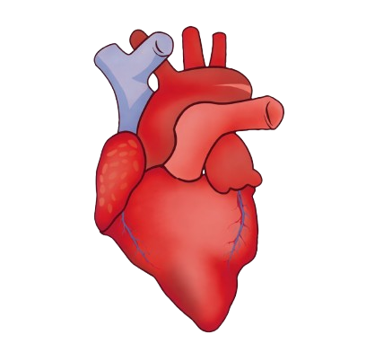
הפרש לחצים - PULSE PRESSURE
ההפרש בין הסיסטולי לדיאסטולי
30-60 mm/hg
(ממ"כ)
30-60 mm/hg
(ממ"כ)
דיאסטולי - DIASTOLIC
הלחץ בזמן הרפיית הלב
60-90 mm/hg
(ממ"כ)
60-90 mm/hg
(ממ"כ)
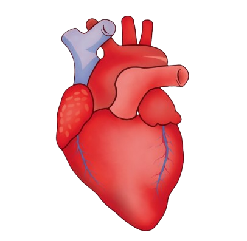
מדידת לחץ דם עם סטטוסקופ
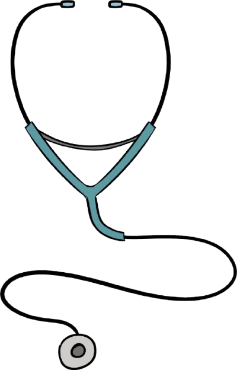
הנחת השרוול מעל המרפק ומיקום הסטטוסקופ בשקע המרפק
סגירת הווסת וניפוח השרוול עד 180
שחרור הווסת מעט תוך כדי האזנה לסטטוסקופ בזמן ירידת המחוג
הנקישה הראשונה - לחץ סיסטולי
הנקישה האחרונה - לחץ דיאסטולי
הנקישה האחרונה - לחץ דיאסטולי
מדידת לחץ דם ללא סטטוסקופ
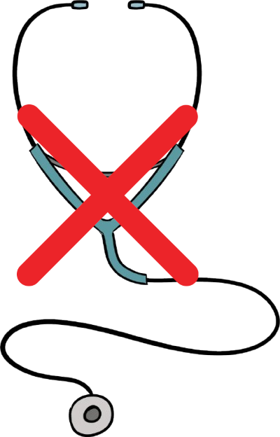
מציאת דופק ריאלי
הנחת השרוול מעל המרפק
סגירת הווסת וניפוח השרוול עד 180
שחרור הווסת מעט תוך כדי הנחת האצבעות על העורק הריאלי
ברגע שיורגש הדופק לראשונה זהו החלץ דם הסיסטולי
יש לזכור שללא סטטוסקופ ניתן למדוד לחץ דם סיסטולי בלבד
חלק שישי -
מדידת דופק
מדידת דופק
חלק שישי -
מדידת דופק
1
נבדוק באמצעות הפאלס - אם לא קורה נבדוק ידנית
2
הבדיקה הידנית תתבצע בעורק הרדיאלי
3
נספור את כמות הפעימות ב15 שניות
4
נכפיל את התוצאה פי 4 לקבלת הדופק
5
במידה והרדיאלי אינו נימוש ב-2 הידיים נבדוק בקרוטידי
במידה ולא יימצא דופק רדיאלי בשתי הידיים נתייחס אל הפצוע כפצוע הלם
חלק שביעי -
מדידת ריווי חמצן
מדידת ריווי חמצן
חלק שביעי -
מדידת ריווי חמצן
מדידת דופק + סטורציה (אחוז ריווי החמצן בדם) של הפצוע
פאלס אוקסימטר
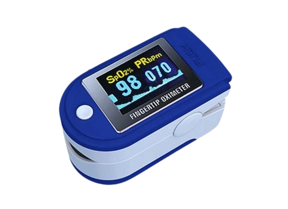
נונין
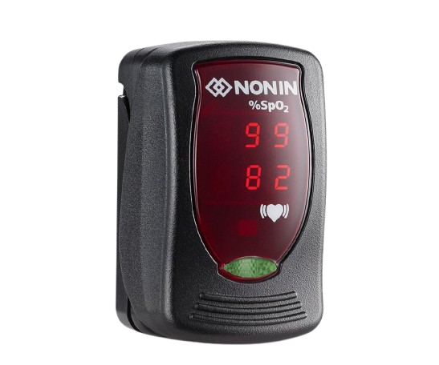
לאחר ביצוע הערכה קלינית, נתחיל בטיפול בהלם עמוק.
טיפול בהלם עמוק
טיפול בהלם עמוק
בהלם עמוק ע"פ הקריטריונים - הנחיית הצוות להשגת גישה למחזור הדם והכנת מוצרי דם
בצוות עם מט"ב
המט"ב = ימשיך בשלבי הסכמה המלאה
החובשים = ישיגו גישה למזור הדם ויכינו החזר נפח (דם/פלזמה)
ללא מט"ב
על החובש להמשיך בסכמה לטיפול בפצוע - מתן החזר נפח וגישה ורידית יהיו בסקר השניוני
יש לזכור - טיפול בהלם בשלב זה יקרה רק כאשר יש בצוות מטפל הכיר
פינוי
פינוי
ניתן להתחיל בשלב זה רק במידה שהפינוי הגיע
לפני שיתחיל הפינוי נרצה לעשות חיתוך מצב בצוות ודיווח רפואי
חיתוך מצב
1
ווידוא העברת כלל המידע הרפואי בצוות
2
עדכון אגמ"י על יציאת הפינוי
3
בגדרת דחיפות וסוג הפינוי הנדרש
4
הגדרת תכנית הטיפול
5
חלוקת משימות לביצוע בצוות
דיווח רפואי
1
מה קרה?
2
מספר נפגעים
3
דחיפות פינוי
4
תיאור נפגעים = פגיעות מרכזיות, הכרה, הלם
דימומים, מדדים
5
פעולות מרכזיות שבוצעו = עצירת דימומים, מתן
נוזלים, טיפול בכאב
6
דרישות לרמה ממונה = מסוק, חילוץ
אודות
ראש מדור טי"ל: רס"ן מיגל לויתן
ניהול הפרויקט: רב"ט גל גנסין
אפיון תוצר הדרכתי: סמל נועה עובדיה
וטור' דרור אברמסון
וטור' דרור אברמסון
תכנות: סמל נועה עובדיה
עיצוב: טור' מייה ליבנה
מומחה תוכן בה"ד 10: סרן רוני ארמון
גירסה: 2020 1.0
